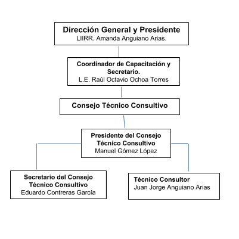

Nosotros
En el Núcleo de Capacitación Integral CIRVE Rescue S. de R. L. de C. V. se trata de capacitar, asesorar, realizar trabajos de altura, planes de emergencia, venta de equipo, entre otros. Lo que comenzó como prácticas de camaradas se ha convertido en una empresa líder en el rubro vertical, CIRVE Rescue no es sólo para expertos, sino que interactúa con aquellos que han emprendido su viaje en el mundo vertical, compartimos los mismos valores y metas, para esto, CIRVE Rescue refuerza sus conocimientos, los profundiza e innova. Nuestros servicios y cursos son aplicados por instructores con los más altos estándares de calidad y certificados a nivel internacional por Instituciones como: Society of Professional Rope Access Technicians (SPRAT), Industrial Rope Access Trade Association (IRATA), Priority 1 Air Rescue Rescate aéreo y Maestro de salto, Aerologista de la Fuerza Aérea Mexicana (FAM), National Fire Protection Association (NFPA), Office of U.S. Foreign Disaster Assistance (OFDA/USAID) y la Texas A&M Engineering Extension Service (TEEX) entre otros.
Todo esto es el resultado de la dedicación, el deseo, la disciplina y el interés por parte de un asombroso grupo de personas, cada componente de CIRVE Rescue es un experto en la materia que da el empuje a ser la mejor empresa vertical para nuestros clientes. Además de brindar servicios de capacitación, se realizan trabajos en altura, asesorías técnicas, supervisiones, colocación de líneas de vida, venta y renta de equipo, administración e implementación de planes preventivos para trabajos en altura, entre otros. Somos una empresa profesional especializada en proteger a la sociedad de caídas y accidentes en altura desde la prevención y mitigación de riesgos con los más altos estándares vanguardistas de calidad, profesionalidad y responsabilidad que nos caracterizan. Eso es lo que somos.
Organigrama de la empresa
MARCO LEGAL
Artículo 25. Corresponde al Estado la rectoría del desarrollo nacional para garantizar que éste sea integral y sustentable, que fortalezca la Soberanía de la Nación y su régimen democrático y que, mediante la competitividad, el fomento del crecimiento económico y el empleo y una más justa distribución del ingreso y la riqueza, permita el pleno ejercicio de la libertad y la dignidad de los individuos, grupos y clases sociales, cuya seguridad protege esta Constitución. La competitividad se entenderá como el conjunto de condiciones necesarias para generar un mayor crecimiento económico, promoviendo la inversión y la generación de empleo. Párrafo reformado DOF 28-06-1999, 05-06-2013.
Artículo 26. A. El Estado organizará un sistema de planeación democrática del desarrollo nacional que imprima solidez, dinamismo, competitividad, permanencia y equidad al crecimiento de la economía para la independencia y la democratización política, social y cultural de la nación. Párrafo reformado DOF 05-06-2013
arículo 27. La propiedad de las tierras y aguas comprendidas dentro de los límites del territorio nacional, corresponde originariamente a la Nación, la cual ha tenido y tiene el derecho de transmitir el dominio de ellas a los particulares, constituyendo la propiedad privada. Las expropiaciones sólo podrán hacerse por causa de utilidad pública y mediante indemnización. La nación tendrá en todo tiempo el derecho de imponer a la propiedad privada las modalidades que dicte el interés público, así como el de regular, en beneficio social, el aprovechamiento de los elementos naturales susceptibles de apropiación, con objeto de hacer una distribución equitativa de la riqueza pública, cuidar de su conservación, lograr el desarrollo equilibrado del país y el mejoramiento de las condiciones de vida de la población rural y urbana. En consecuencia, se dictarán las medidas necesarias para ordenar los asentamientos humanos y establecer adecuadas provisiones, usos, reservas y destinos de tierras, aguas y bosques, a efecto de ejecutar obras públicas y de planear y regular la fundación, conservación, mejoramiento y crecimiento de los centros de población; para preservar y restaurar el equilibrio ecológico; para el fraccionamiento de los latifundios; para disponer, en los términos de la ley reglamentaria, la organización y explotación colectiva de los ejidos y comunidades; para el desarrollo de la pequeña propiedad rural; para el fomento de la agricultura, de la ganadería, de la silvicultura y de las demás actividades económicas en el medio rural, y para evitar la destrucción de los elementos naturales y los daños que la propiedad pueda sufrir en perjuicio de la sociedad. Párrafo reformado DOF 06-02-1976, 10-08-1987, 06-01-1992.
Artículo 28. En los Estados Unidos Mexicanos quedan prohibidos los monopolios, la (sic DOF 03-02- 1983) prácticas monopólicas, los estancos y las exenciones de impuestos en los términos y condiciones que fijan las leyes. El mismo tratamiento se dará a ls (sic DOF 03-02-1983) prohibiciones a título de protección a la industria.
Artículo 104. Los Tribunales de la Federación conocerán: CONSTITUCIÓN POLÍTICA DE LOS ESTADOS UNIDOS MEXICANOS CÁMARA DE DIPUTADOS DEL H. CONGRESO DE LA UNIÓN Secretaría General Secretaría de Servicios Parlamentarios Última Reforma DOF 24-02-2017 95 de 295.
Artículo 131. Es facultad privativa de la Federación gravar las mercancías que se importen o exporten, o que pasen de tránsito por el territorio nacional, así como reglamentar en todo tiempo y aún prohibir, por motivos de seguridad o de policía, la circulación en el interior de la República de toda clase de efectos, cualquiera que sea su procedencia. Párrafo reformado DOF 08-10-1974, 29-01-2016
LEY GENERAL DE SOCIEDADES MERCANTILES Nueva Ley publicada en el Diario Oficial de la Federación el 4 de agosto de 1934 TEXTO VIGENTE Última reforma publicada DOF 02-06-2009
LEY GENERAL DE SOCIEDADES MERCANTILES CAPITULO I De la constitución y funcionamiento de las Sociedades en general
Artículo 1o.- Esta Ley reconoce las siguientes especies de sociedades mercantiles: I.- Sociedad en nombre colectivo; II.- Sociedad en comandita simple; III.- Sociedad de responsabilidad limitada; IV.- Sociedad anónima; V.- Sociedad en comandita por acciones, y VI.- Sociedad cooperativa. Cualquiera de las sociedades a que se refieren las fracciones I a V de este artículo podrá constituirse como sociedad de capital variable, observándose entonces las disposiciones del Capítulo VIII de esta Ley.
Artículo 2o.- Las sociedades mercantiles inscritas en el Registro Público de Comercio, tienen personalidad jurídica distinta de la de los socios. Salvo el caso previsto en el artículo siguiente, no podrán ser declaradas nulas las sociedades inscritas en el Registro Público de Comercio. Las sociedades no inscritas en el Registro Público de Comercio que se hayan exteriorizado como tales, frente a terceros consten o no en escritura pública, tendrán personalidad jurídica. LEY GENERAL DE SOCIEDADES MERCANTILES CÁMARA DE DIPUTADOS DEL H. CONGRESO DE LA UNIÓN Secretaría General Secretaría de Servicios Parlamentarios Centro de Documentación, Información y Análisis Última Reforma DOF 02-06-2009 2 de 41 Las relaciones internas de las sociedades irregulares se regirán por el contrato social respectivo, y, en su defecto, por las disposiciones generales y por las especiales de esta ley, según la clase de sociedad de que se trate. Los que realicen actos jurídicos como representantes o mandatarios de una sociedad irregular, responderán del cumplimiento de los mismos frente a terceros, subsidiaria, solidaria e ilimitadamente, sin perjuicio de la responsabilidad penal, en que hubieren incurrido, cuando los terceros resultaren perjudicados. Los socios no culpables de la irregularidad, podrán exigir daños y perjuicios a los culpables y a los que actuaren como representantes o mandatarios de la sociedad irregular.
DE LA CONSTITUCIÓN POLÍTICA DE LOS ESTADOS UNIDOS MEXICANOS Constitución publicada en el Diario Oficial de la Federación el 5 de febrero de 1917 TEXTO VIGENTE Última reforma publicada DOF 24-02-2017
La normatividad económica del país que comprende los artículos 25 al 28, 104 y 131 LEY GENERAL DE SOCIEDADES MERCANTILES, Artículos 1 y 2.